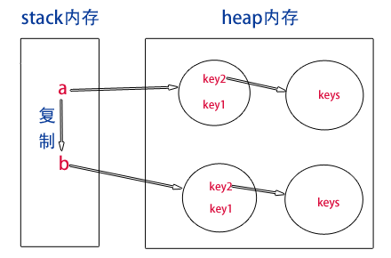

原文连接:https://www.cnblogs.com/chenglianjie/p/11903852.html
1、栈(stack)和堆（heap）
stack为自动分配的内存空间，它由系统自动释放；而heap则是动态分配的内存，大小也不一定会自动释放
2、数据类型
JS分两种数据类型：
js的六或七大数据类型：Number, String, Boolean, Undefined , Null , Object， Symbol（ES6）
基本数据类型：Number、String、Boolean、Null、 Undefined、Symbol（ES6），这些类型可以直接操作保存在变量中的实际值。
引用数据类型：Object（在JS中除了基本数据类型以外的都是对象，数据是对象，函数是对象，正则表达式是对象）
3、基本数据类型（存放在栈中）
基本数据类型是指存放在栈中的简单数据段，数据大小确定，内存空间大小可以分配，它们是直接按值存放的，所以可以直接按值访问。基本数据类型的值是没有办法添加属性和方法的
var a = 10;
var b = a;
b = 20;
console.log(a); // 10值
console.log(b); // 20值
下图演示了这种基本数据类型赋值的过程：

4、引用数据类型（存放在堆内存中的对象，每个空间大小不一样，要根据情况进行特定的配置）
引用类型是存放在堆内存中的对象，变量其实是保存的在栈内存中的一个指针（保存的是堆内存中的引用地址），这个指针指向堆内存。
引用类型数据在栈内存中保存的实际上是对象在堆内存中的引用地址。通过这个引用地址可以快速查找到保存中堆内存中的对象
var obj1 = new Object();
var obj2 = obj1;
obj2.name = "我有名字了";
console.log(obj1.name); // 我有名字了
说明这两个引用数据类型指向了同一个堆内存对象。obj1赋值给obj2，实际上这个堆内存对象在栈内存的引用地址复制了一份给了obj2，但是实际上他们共同指向了同一个堆内存对象，所以修改obj2其实就是修改那个对象，所以通过obj1访问也能访问的到。

var a = [1,2,3,4,5];
var b = a; // 传址 ,对象中传给变量的数据是引用类型的，会存储在堆中；
var c = a[0]; //传值，把对象中的属性/数组中的数组项赋值给变量，这时变量C是基本数据类型，存储在栈内存中；改变栈中的数据不会影响堆中的数据
alert(b);//1,2,3,4,5
alert(c);//1
//改变数值
b[4] = 6;
c = 7;
alert(a); //[1,2,3,4,6];
alert(a[0]);//1从上面我们可以得知，当我改变b中的数据时，a中数据也发生了变化；但是当我改变c的数据值时，a却没有发生改变。
这就是传值与传址的区别。因为a是数组，属于引用类型，所以它赋予给b的时候传的是栈中的地址（相当于新建了一个不同名“指针”），而不是堆内存中的对象。而c仅仅是从a堆内存中获取的一个数据值，并保存在栈中。所以b修改的时候，会根据地址回到a堆中修改，c则直接在栈中修改，并且不能指向a堆内存中。

最后： 总结基本数据类型和引用数据类型区别
1、声明变量时内存分配不同
*原始类型：在栈中，因为占据空间是固定的，可以将他们存在较小的内存中-栈中，这样便于迅速查询变量的值
*引用类型：存在堆中，栈中存储的变量，只是用来查找堆中的引用地址。
这是因为：引用值的大小会改变，所以不能把它放在栈中，否则会降低变量查寻的速度。相反，放在变量的栈空间中的值是该对象存储在堆中的地址。地址的大小是固定的，所以把它存储在栈中对变量性能无任何负面影响
2、不同的内存分配带来不同的访问机制
在javascript中是不允许直接访问保存在堆内存中的对象的，所以在访问一个对象时，首先得到的是这个对象在堆内存中的地址，然后再按照这个地址去获得这个对象中的值，这就是传说中的按引用访问。
而原始类型的值则是可以直接访问到的。
3、复制变量时的不同
1）原始值：在将一个保存着原始值的变量复制给另一个变量时，会将原始值的副本赋值给新变量，此后这两个变量是完全独立的，他们只是拥有相同的value而已。
2）引用值：在将一个保存着对象内存地址的变量复制给另一个变量时，会把这个内存地址赋值给新变量，